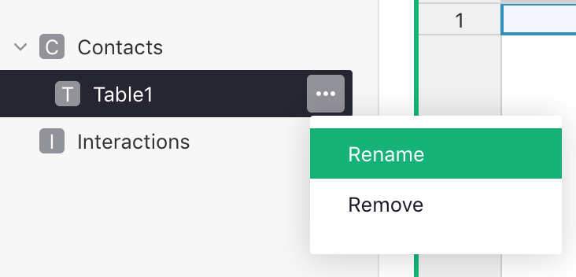
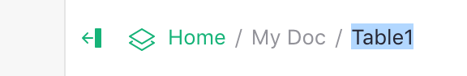
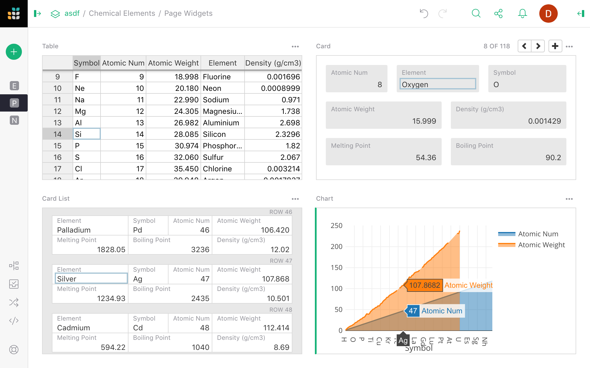
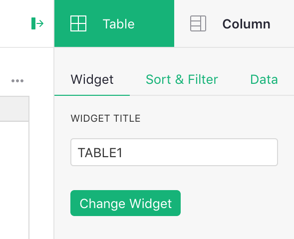
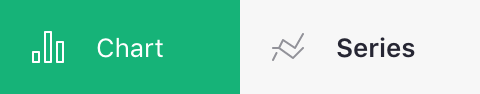
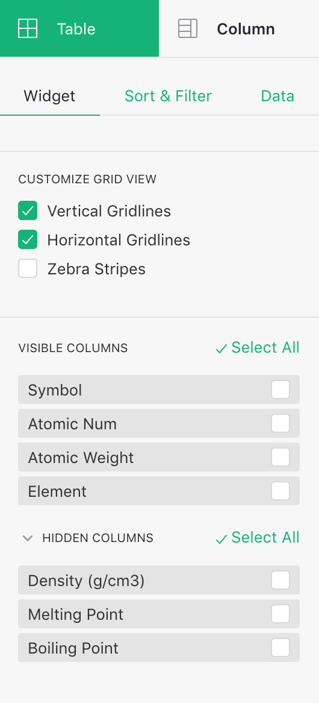
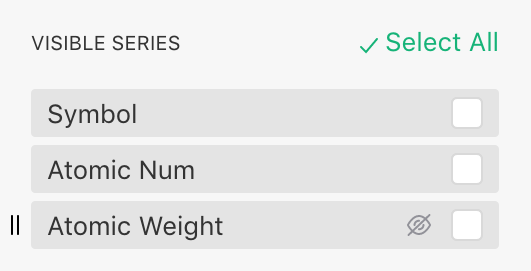
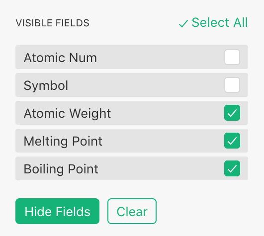

Pages & widgets#
Unlike traditional spreadsheets, in Grist you can create multiple views of the same data, and display multiple data sets on one page. This allows you to create useful dashboards and custom applications tailored to your needs.
Pages#
In Grist, you organize your document into “pages”. These are listed in the left panel, with collapsible groups. You may rearrange and group pages in the left panel by dragging them to suit your needs.

You can rename pages using the three-dots menu next to the page name in the list, or by clicking the page name on top of the screen.


Using the opener icon () near the top of the left panel, you can collapse the panel to show only the initials of each page, leaving more screen space to view your data.
To add a new page, use the “Add New” button, and click “Add Page”. At that point, you’ll get to choose the page widget to include in the new page.
Page widgets#
A page contains sections, such as tables or charts, which we call “page widgets”. Each page widget shows data from one table. A page may contain more than one page widget, and you can arrange and link them to create useful layouts.
Here are the supported kinds of page widgets. The salient features of each one are described on separate pages.
- Table: similar to the spreadsheet grid and a good way to see many records at once.
- Card: shows a single record in a form-like layout which you can customize.
- Card List: uses the same layout options as a card, displays a scrollable list of records.
- Chart: plots data on a chart with support for several different chart types.

Widget picker#
The menu opened by the “Add New” button has options “Add Page” and “Add Widget to Page”. In either case, you’ll see the “page widget picker” where you can choose your desired widget:

You can select the type of widget and the table of data to show (or “New Table” to create a new table). The “summary” icon () allows you to summarize data.
When adding a widget to an existing page, you’ll also see a “Select By” option, which allows linking this widget to another one already on the page. This process is described in greater detail in Linking widgets.
Once you’ve added widgets, they can be moved around and resized, as described in Custom Layouts.
Changing widget or its data#
If you’d like to change a widget or the data it displays after it’s added, you may do so. Click the three-dots button on the top left of your widget, and select “Widget options”. This opens the right-side panel. Click on “Change Widget”.

You can then use the widget picker to change the widget or the data it displays.
Configuring field lists#
Although different kinds of page widgets look very different, they all represent a list of records. Any of the widget types can be used to show the same underlying data.
In a Table, each record is represented by a row, and columns represent the same kind of value for each record.
A table is also a helpful representation of the underlying data to keep in mind when configuring other widget types.
In a Card List, each row of the underlying data is shown as a card. Each column in the data corresponds to a field in this card. When talking about a Card widget, we’ll use the term “field”, which conceptually is the same as a “column” in a Table widget.
A Card is just like a Card List, but shows only one row of data at a time.
In a Chart, each row of the underlying data table becomes a graphical element, such as a point on a line chart, a bar in a bar chart, or a slice of a pie chart. In this context, the columns of our data table are better known as data “series”.
Click on the opener icon () to open the right panel. Depending on the currently-selected widget, you might see a tab for configuring a Column, Field, or Series. These are not different in substance, but different terms make more sense for different widgets.



Clicking on the widget tab (highlighted in green in the images above), you’ll see subtabs for “Widget”, “Sort & Filter”, and “Data”. We’ll focus on the first one: “Widget”. You’ll see options specific to the type of the selected widget, and below that two lists: “Visible Columns” and “Hidden Columns”.

The “Hidden Columns” are the columns available in the data, but not shown in this widget. In a Card, these lists would show up as “Visible Fields” / “Hidden Fields”. In a chart, they show up as “Visible Series” / “Hidden Series”.
These lists allow you to include, exclude, or rearrange fields in a widget. As you move your mouse over the items in the list, use the “eye” icons that pop up to show or hide them. Alternatively, you can select several items using the checkboxes, and hide or show them together.


This ordered list of fields can be used to customize any of the page widget types. It has a particular importance in the Chart widget, where different chart types and options require you to place series in a certain order in the “Visible Series” list to ensure your data is plotted correctly.